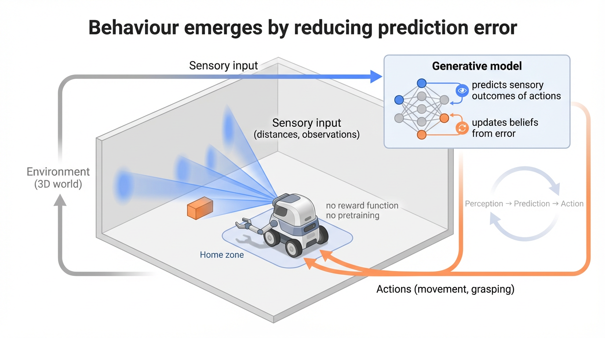

Most AI systems are trained to map inputs to outputs, optimise rewards, or imitate behaviour.
Active inference takes a different approach.
Instead of learning a policy directly, the agent maintains a model of the world, continuously predicts what it expects to observe, and acts to reduce the mismatch between prediction and reality.
In simple terms:
the agent predicts → compares → updates → acts → and repeats
Behaviour emerges from this loop.
Open the full writeup (PDF)
(I work with industry partners applying active inference and generative modelling to real-world systems. Consulting)
The agent receives sensory input from the world (here, ray-cast distances acting as a crude form of vision), and uses a generative model to predict what those inputs should be under different actions.
When predictions are wrong, the model updates. When actions can reduce prediction error, the agent moves.
There is no explicit reward function, and no pretraining. Behaviour arises from maintaining consistency between beliefs and observations.
Moving from 2D environments to a 3D physical world changes everything.
The agent must deal with inertia, drag, collisions, and partial observability. It cannot simply “jump” between states — it has to act through a body, in space, over time.
In this setting, behaviour becomes visibly different:
The world is not given. The transition dynamics are learned online from interaction with the environment.
In this task, the robot must locate an object, grasp it, and return to a home zone.
All behaviour (exploration, obstacle avoidance, grasping, and return) emerges from the same underlying inference process.
Active inference is grounded in variational inference.
The agent maintains beliefs over hidden states \(x\) and minimises a quantity known as variational free energy:
This can be interpreted as:
Minimising \(F\) corresponds to finding the best explanation of sensory data.
Action is selected by minimising expected free energy:
This drives behaviour that both achieves goals (low risk) and reduces uncertainty (low ambiguity).
Active inference provides a unified framework for perception, learning, and action.
The same principles used to model brain function can be used to build agents that operate in complex, uncertain environments.
Rather than separating learning, planning, and control, these processes emerge from a single objective: maintaining coherent beliefs about the world.